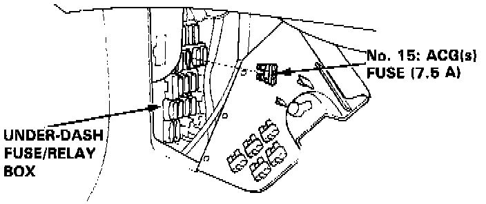

Clearing Trouble Codes

1. Turn the ignition switch off.
2. Remove the No. 15: ACG(s) fuse (7.5 A) from the under-dash fuse/relay box for 10 seconds to reset the PCM.
NOTE: Disconnecting the No. 15 fuse also cancels the power seat setting.